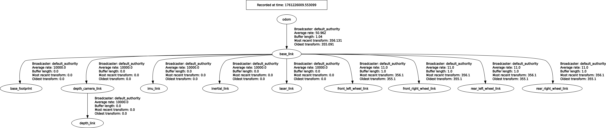
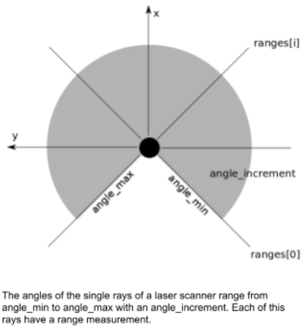
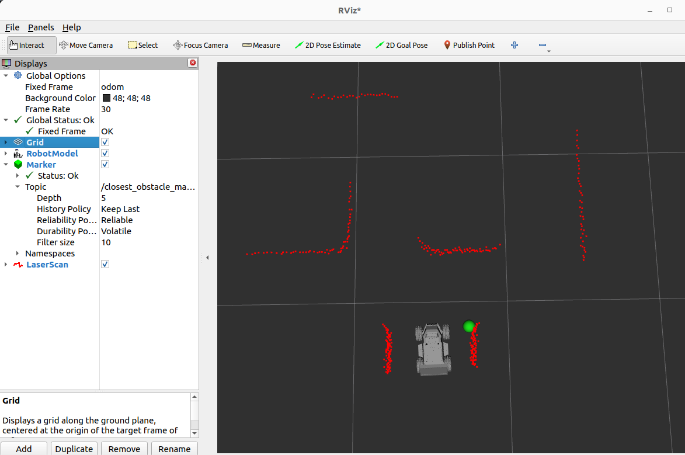
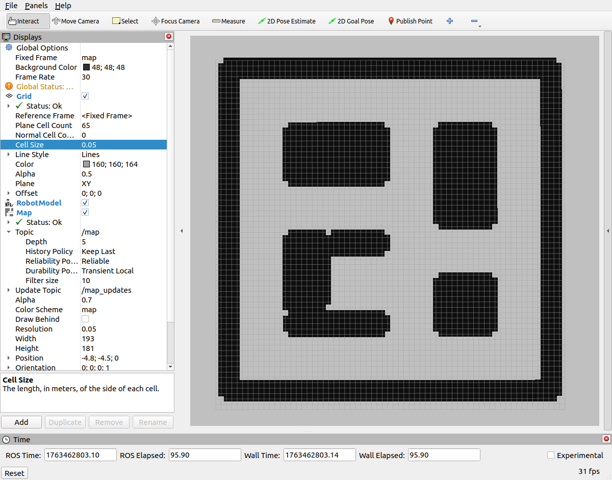

Lecture 5: TF2, Coordinate Frames & RViz
5.1The problem TF2 solves
Look back at the URDF you built in Lecture 4. It described the LIMO as a tree of rigid <link> elements connected by <joint> elements — base_link, four wheel links, laser_link, depth_camera_link, imu_link, and so on. That tree tells the robot how its parts are connected. It does not, by itself, tell any node running on the robot where any of those parts currently are in the real world, or where they are relative to each other at this exact instant.
Every sensor on the LIMO reports data in its own local bubble. The 2D lidar publishes ranges measured from the sensor's own origin, angle zero pointing wherever the sensor happens to be mounted facing. The depth camera publishes points relative to its own optical center. The IMU reports orientation relative to its own mounting. None of these numbers mean anything to each other until something ties them into one shared coordinate system — and that "something" has to keep working as the chassis drives, the steering hinge swings, and the wheels spin, because none of those relationships are fixed once the robot moves.
TF2 (the ROS 2 transform library, package tf2_ros) is that shared coordinate system. Every part of the robot that has a pose gets a named frame. Every pair of adjacent frames is connected by a transform — a translation and rotation describing how to get from one frame to the other. Nodes broadcast these transforms continuously onto a tree, and any other node can ask tf2 "where is frame A relative to frame B, right now?" without needing to know how that chain of transforms was computed.
Think of TF2 as a living, constantly-updated family tree of coordinate frames. Each frame has exactly one parent. tf2 walks the tree and multiplies transforms together to answer "where is X relative to Y" for any two frames in the tree — even frames that aren't directly connected, as long as there's a path between them.
Here is the full TF tree the LIMO's software stack maintains once URDF, odometry, and (eventually) localization are all running:
global, corrected by localization"] -->|dynamic, jumps| odom["odom
local, continuous"] odom -->|dynamic, smooth| base_link["base_link
robot body"] base_link -->|static, fixed| base_footprint["base_footprint
ground projection"] base_link -->|static, fixed| laser_link["laser_link
2D lidar"] base_link -->|static, fixed| depth_camera_link["depth_camera_link
RGB-D camera"] depth_camera_link -->|static, fixed| depth_link["depth_link
optical frame"] base_link -->|static, fixed| imu_link["imu_link
IMU"] base_link -->|dynamic, continuous| fl["front_left_wheel_link"] base_link -->|dynamic, continuous| fr["front_right_wheel_link"] base_link -->|dynamic, continuous| rl["rear_left_wheel_link"] base_link -->|dynamic, continuous| rr["rear_right_wheel_link"]
This session is entirely about that diagram: what each frame means, who broadcasts each arrow, how to inspect it live, how to use it correctly from a Python node, and how to watch the whole thing move in RViz2.
Suppose the LIMO's lidar reports an obstacle 0.6m away, straight ahead of the sensor. If the sensor happens to be mounted 12cm behind and 12cm above the chassis centre, and the chassis is currently rotated 30° from where it started, "straight ahead of the sensor" is not the same direction as "straight ahead of the robot," which is not the same as "north" in the room. TF2 is what lets a node ask "where is that obstacle relative to base_link" or "relative to odom" and get a correct answer without that node needing to know anything about lidar mounting offsets or the robot's current heading — it just asks the tree.

5.2REP-105's four core frames
ROS has a standard (REP-105) for naming the frames every mobile robot stack should provide, precisely so that navigation, SLAM, and visualization tools all agree on what map, odom, and base_link mean without each robot inventing its own convention. The LIMO stack follows it exactly.
map
map is the outermost, globally-consistent frame. It is anchored to a fixed point in the world (usually wherever a saved map's origin is) and does not drift — but it is only as good as the localization algorithm feeding it. Later in the course, a node like AMCL will compare live lidar scans against a saved map and periodically publish a correction as the map → odom transform. That correction can make the robot's reported position jump — not because the robot physically teleported, but because the estimate of where odom sits inside map just got revised.
odom
odom is the frame of dead-reckoning. It is built purely by integrating wheel encoder ticks (and on the LIMO, IMU data) over time — "the robot moved 3cm forward and turned 2 degrees since the last tick." Because it is a running sum with no external correction, odom is guaranteed to be locally smooth (no jumps, no teleporting, perfect for short-term motion planning and control loops) but it will slowly drift from ground truth the farther and longer the robot drives, because small errors in wheel slip and encoder resolution accumulate.
base_link
base_link is the LIMO's own body frame — the same frame you defined as the root link in Lecture 4's URDF. It is rigidly fixed to the chassis: as the robot drives, base_link's pose relative to odom changes continuously, but everything rigidly bolted to the chassis (the lidar, the IMU, the camera mount) stays at a constant offset from base_link forever.
base_footprint
base_footprint is base_link projected straight down onto the ground plane — same x/y position, but z is pinned to zero and roll/pitch are usually zeroed too, even if the chassis itself pitches slightly. Costmaps and 2D navigation planners work in this frame because they reason about the ground plane, not the 3D pose of the chassis; it lets the nav stack ignore small vibration-induced tilt that the IMU would otherwise report.
| Frame | Anchored to | Behavior | Who publishes it |
|---|---|---|---|
map | the world / saved map | globally accurate, can jump on correction | a localization node (e.g. AMCL, later) |
odom | wherever the robot was powered on | locally smooth, drifts over time/distance | the odometry source (wheel/IMU fusion) |
base_link | the chassis itself | rigid body frame, moves with the robot | the odometry node, relative to odom |
base_footprint | ground projection of base_link | static offset from base_link | robot_state_publisher (fixed joint) |
You could try to publish everything directly in map. The problem is that map corrections happen in discrete jumps whenever localization runs — great for long-term accuracy, terrible for a control loop that needs continuous, jump-free numbers every cycle. Splitting the chain into map→odom (jumpy, accurate) and odom→base_link (smooth, drifting) lets each consumer pick the guarantee it actually needs.
Looking at the LIMO's own URDF (Lecture 4), base_footprint is added with a single fixed joint named base_joint connecting it to base_link, with a small vertical offset so that base_footprint's origin sits exactly at ground height under the chassis's centre. It carries no visual or collision geometry of its own — it exists purely as a coordinate reference. When Lecture 6 introduces ros2_control and later lectures introduce costmaps, this is the frame those layers will attach to, not base_link, precisely so a small amount of suspension travel or IMU-measured tilt on the real hardware doesn't feed noise into the 2D navigation planner.
5.3Static vs dynamic transforms
Every arrow in the TF tree diagram is either static or dynamic, and the distinction maps directly onto joint types from your Lecture 4 URDF.
- Static transforms never change once the robot is physically built. A
fixedjoint in the URDF — the lidar bolted to the chassis, the IMU screwed to a mounting plate,base_footprint's offset frombase_link— produces a static transform.robot_state_publisherreads these directly from the URDF and broadcasts them once (on the/tf_statictopic), because they will never need updating. - Dynamic transforms change every control cycle. Wheel joints are
continuous(they spin forever), and on the Ackermann-steering LIMO the steering hinge isrevolute(it swings back and forth within limits) — both get republished on every joint state update. Theodom → base_linktransform is dynamic too, but for a different reason: it isn't driven by a URDF joint at all, it's continuously recomputed by the odometry node from wheel encoder ticks and republished on/tfmany times a second as the robot moves.map → odomis also dynamic, but updates far less often — only when a localization node has a new correction.
| URDF joint (Lecture 4) | Type | TF broadcast | Broadcast by |
|---|---|---|---|
base_joint (base_link → base_footprint) | fixed | static | robot_state_publisher |
laser_joint (base_link → laser_link) | fixed | static | robot_state_publisher |
depth_camera_joint (base_link → depth_camera_link) | fixed | static | robot_state_publisher |
depth_camera_link → depth_link | fixed | static | robot_state_publisher |
imu_joint (base_link → imu_link) | fixed | static | robot_state_publisher |
*_wheel (each wheel link) | continuous | dynamic | robot_state_publisher (from /joint_states) |
main_steering / *_steering (Ackermann) | revolute | dynamic | robot_state_publisher (from /joint_states) |
| odom → base_link | not a URDF joint | dynamic, high rate | odometry node |
| map → odom | not a URDF joint | dynamic, low rate | localization node (e.g. AMCL) |
robot_state_publisher is the node doing more work than it gets credit for here: it subscribes to /joint_states (published by whatever is driving the wheels — a real encoder driver on hardware, or ros2_control in Gazebo, covered next lecture), combines each joint angle with the fixed geometry from your URDF, and broadcasts the entire resulting set of transforms — static ones once on /tf_static, dynamic ones continuously on /tf.
Occasionally you need a transform that exists for a reason other than a URDF joint — for example, publishing a fixed offset for a temporary calibration rig, or bridging a frame from a third-party driver that doesn't follow REP-105 naming. For exactly that case, tf2_ros ships a small command-line utility that broadcasts a single static transform without writing any code:
This is a genuinely static transform in every sense used in this section — it publishes once on /tf_static and stays constant for as long as the process runs — but it is a good reminder that "static" describes the relationship, not the mechanism: it doesn't have to come from a URDF joint at all.
5.4Inspecting TF live
Before writing a single line of tf2 code, get comfortable looking at the tree from the command line. Two tools cover almost everything you need.
rqt_tf_tree — the whole tree, visually
With the LIMO's description stack (or Gazebo sim) running, launch:
This opens a live graphical window: every frame currently being broadcast appears as a box, with arrows showing parent→child relationships, which node is publishing each link, and how recently it last updated. It is the fastest way to answer "is my new sensor frame actually connected to the tree, or is it floating disconnected because I forgot a joint?" — a disconnected frame shows up as its own separate little tree with no path back to base_link.
tf2_echo — one specific relationship, in numbers
When you know exactly which two frames you care about, tf2_echo prints the live translation and rotation between them, refreshed continuously:
Two details worth noticing in that transcript. First, before any map frame exists (no localization node running yet) tf2_echo just waits and warns — it does not crash, it patiently retries. Second, the argument order is tf2_echo <source_frame> <target_frame>: the output is "the pose of target_frame expressed in source_frame's coordinates" — read it as "where is base_link, as seen from laser_link." Getting this order backwards is one of the most common tf2 mistakes (see 5.8).
ros2 topic echo /tf_static — seeing the raw messages once
It can also help to see the raw transform messages tf2 is built from. Static transforms are only published once (or on a latched/transient-local basis), so a single echo shows you every fixed offset in the tree at once:
Compare that against ros2 topic echo /tf --once while the robot is stationary but powered — you'll see a stream of odom → base_link messages arriving at whatever rate the odometry node publishes, each with a slightly different translation/rotation as noise and small drift accumulate even while sitting still.
5.5tf2_ros in code: Buffer and TransformListener
Command-line tools are for humans. A node needs to ask the same question — "where is frame A relative to frame B, right now?" — programmatically. tf2_ros gives you exactly two objects to set up, once, in your node's constructor:
from tf2_ros import Buffer, TransformListener
# in __init__:
self.tf_buffer = Buffer()
self.tf_listener = TransformListener(self.tf_buffer, self, spin_thread=True)The Buffer is a rolling cache of every transform tf2 has seen recently (by default it keeps roughly the last 10 seconds). The TransformListener is what actually subscribes to /tf and /tf_static in the background and fills that buffer as messages arrive. Passing spin_thread=True tells the listener to run its subscription callbacks on a separate background thread, so the buffer keeps filling even while your node's main thread is busy doing other work (like processing a laser scan) — without that, you'd have to interleave spinning manually and it's easy to starve the listener.
Once the buffer has data, asking for a transform is one call:
transform = self.tf_buffer.lookup_transform(
target_frame, # the frame you want the answer expressed in
source_frame, # the frame your data currently lives in
rclpy.time.Time() # the time you want the transform at
)lookup_transform(target_frame, source_frame, time) returns the transform that converts a point from source_frame into target_frame. If your data was measured by the lidar, source_frame='laser_link'. If you want it expressed in the smooth odometry frame, target_frame='odom'. Swap the two arguments and everything still "works" — you just get numbers transformed in the wrong direction, which is a much nastier bug than a crash because it often still looks plausible.
The third argument, a Time, deserves its own explanation. rclpy.time.Time() with no arguments constructs the special "time zero," which tf2 interprets as "give me the latest transform you have, whatever timestamp that is." As a beginner this is almost always what you want: it avoids asking for a transform at some exact past timestamp that might not exist yet in the buffer. If you instead pass a specific stamp — say, the timestamp on an incoming sensor message — tf2 will try to find (or interpolate) the transform at that exact instant, which is more precise but can fail if that data hasn't arrived yet or has already scrolled out of the buffer.
The three exceptions you will actually hit
| Exception | Means | Typical cause |
|---|---|---|
LookupException | one of the two frames doesn't exist in the tree at all | typo in a frame name, or that broadcaster node hasn't started yet |
ConnectivityException | both frames exist, but there's no path between them | a disconnected sub-tree — e.g. forgetting a fixed joint in the URDF |
ExtrapolationException | the requested time is outside the data the buffer currently has | calling lookup_transform() too soon after startup, before any /tf messages have arrived — or asking for a timestamp too far in the past/future |
Always wrap lookup_transform in a try/except. On a freshly-launched robot there is a brief window — often under a second — where your node is running but the TF tree hasn't been populated yet. Catching the exception, logging a warning, and simply skipping that one callback (rather than crashing the node) is standard practice, and it's exactly what the real node in the next section does.
Spelled out with the specific exception types instead of a bare except Exception, the same pattern looks like this — useful while you're still learning, so you can see in your logs exactly which failure mode you hit:
from tf2_ros import LookupException, ConnectivityException, ExtrapolationException
try:
transform = self.tf_buffer.lookup_transform(target_frame, source_frame, rclpy.time.Time())
point = do_transform_point(point, transform)
except LookupException:
self.get_logger().warning('One of the frames does not exist yet — is the broadcaster running?')
return
except ConnectivityException:
self.get_logger().warning('No path between these frames — check for a disconnected TF sub-tree.')
return
except ExtrapolationException:
self.get_logger().warning('No TF data at this time yet — buffer is still filling, try again next scan.')
return5.6Walkthrough: closest_scan_marker.py
Everything from the last two sections comes together in a real node from the course repository. Its job: read the live lidar scan, find the single closest obstacle point, and drop a visible marker at that point's location — not relative to the spinning sensor, but relative to the smooth odom frame, so the marker holds still in the world as the robot turns.
The raw LaserScan message only gives you range and angle measured from the sensor's own zero heading. If you plotted the closest point directly using those numbers, the "obstacle" would appear to spin around the origin every time the LIMO turns — because you'd be plotting it in laser_link, and laser_link itself is rotating with the chassis. To reason about where that obstacle actually is in the world — to react to it with a /cmd_vel command, or eventually plot it on a map — you first need laser_link's own pose in a stable frame. That is precisely what tf_buffer.lookup_transform() supplies.
# file: closest_scan_marker_node.py
import math
import rclpy
from rclpy.node import Node
from sensor_msgs.msg import LaserScan
from visualization_msgs.msg import Marker
from geometry_msgs.msg import PointStamped
from builtin_interfaces.msg import Duration
from tf2_ros import Buffer, TransformListener
from tf2_geometry_msgs import do_transform_point
class ClosestScanMarker(Node):
def __init__(self):
super().__init__('closest_scan_marker')
self.declare_parameter('output_frame', 'odom') # publish in odom by default
self.declare_parameter('min_range', 0.02)
self.declare_parameter('max_range', 50.0)
self.marker_pub = self.create_publisher(Marker, '/closest_obstacle_marker', 10)
self.scan_sub = self.create_subscription(LaserScan, '/scan', self.on_scan, 1)
# TF setup
self.tf_buffer = Buffer()
self.tf_listener = TransformListener(self.tf_buffer, self, spin_thread=True)
def on_scan(self, msg: LaserScan):
# Find closest reading and its angle
closest_range = min(msg.ranges)
closest_angle = msg.angle_min + msg.ranges.index(closest_range) * msg.angle_increment
# Convert to (x, y) in the scan's own frame (laser_link)
x = closest_range * math.cos(closest_angle)
y = closest_range * math.sin(closest_angle)
z = 0.0
point = PointStamped()
point.header = msg.header # source frame = the scan's own frame_id
point.point.x = x
point.point.y = y
point.point.z = z
target_frame = 'odom'
source_frame = 'laser_link'
try:
transform = self.tf_buffer.lookup_transform(target_frame, source_frame, rclpy.time.Time())
point = do_transform_point(point, transform)
except Exception as e:
self.get_logger().warning(f"Failed to lookup transform: {str(e)}")
# Build marker (in odom)
marker = Marker()
marker.header.stamp = self.get_clock().now().to_msg()
marker.header.frame_id = 'odom'
marker.ns = 'closest_scan'
marker.id = 0
marker.type = Marker.SPHERE
marker.action = Marker.ADD
marker.pose.orientation.w = 1.0
marker.pose.position.x = point.point.x
marker.pose.position.y = point.point.y
marker.pose.position.z = point.point.z
marker.scale.x = 0.08
marker.scale.y = 0.08
marker.scale.z = 0.08
marker.color.r = 0.1
marker.color.g = 1.0
marker.color.b = 0.1
marker.color.a = 0.9
self.marker_pub.publish(marker)
def main():
rclpy.init()
node = ClosestScanMarker()
try:
rclpy.spin(node)
finally:
node.destroy_node()
rclpy.shutdown()
if __name__ == '__main__':
main()Reading it top to bottom
Parameters. Three declared parameters make the node reusable without editing code: output_frame (defaults to 'odom' — where you want the marker expressed), and min_range/max_range as sane bounds matching the LIMO's 2D lidar spec (values below min_range or above max_range in a real deployment should be filtered as invalid readings — this teaching version keeps the filtering logic out to stay focused on the tf2 pattern).
Publisher and subscription. A Marker publisher on /closest_obstacle_marker for RViz to display, and a LaserScan subscription on /scan with a small queue depth of 1 — for a live sensor stream, you almost always want the newest reading, not a backlog of stale ones.
Finding the closest point. msg.ranges is a flat array of range readings, one per angular step. min(msg.ranges) finds the smallest — closest — range, and msg.ranges.index(closest_range) finds where in the array it sits. Multiplying that index by msg.angle_increment and adding msg.angle_min converts "which array slot" back into "which angle," matching how the driver originally laid the scan out.
Polar to Cartesian. Standard trigonometry — x = range·cos(angle), y = range·sin(angle) — turns (range, angle) into an (x, y) point, but that point is still expressed in laser_link's own coordinate frame at this stage.
The PointStamped trick. Setting point.header = msg.header is doing real work: it copies the scan's frame_id (which is laser_link on the LIMO) directly onto the point, so tf2 knows unambiguously which frame these x/y/z numbers were measured in — without that, do_transform_point would have no way to know where to transform from.
lookup_transform + do_transform_point. This is the pattern from 5.5 in action: target_frame='odom', source_frame='laser_link', and rclpy.time.Time() for "give me the latest available transform." do_transform_point (from tf2_geometry_msgs) then applies that transform's rotation and translation to the point, returning a new PointStamped now expressed in odom. The whole lookup is wrapped in a try/except exactly as recommended in 5.5, so a brief startup window with no TF data yet just produces one skipped/logged callback instead of a crash.
Publishing the Marker. The marker's header.frame_id is set to 'odom' to match where the point now lives — RViz uses this field to know which frame to draw the marker in, and it must match reality or the sphere renders in the wrong place (or nowhere visible). A green (r=0.1, g=1.0, b=0.1) 8cm sphere (scale.x/y/z = 0.08) at the transformed position gives an unmistakable, easy-to-spot marker in RViz.
You'll also notice a from builtin_interfaces.msg import Duration import at the top that never gets used in the body of the node. That field exists on Marker as marker.lifetime, and leaving it unset (as this node does) defaults to zero, which RViz interprets as "persist forever, until explicitly overwritten." Since this node republishes the same id/ns on every scan callback, each new marker simply replaces the last one — the same effect a short lifetime would achieve, just driven by publish rate instead of a timeout. Setting an explicit marker.lifetime = Duration(sec=1) becomes useful once you publish markers less frequently than the scan rate, so stale ones auto-expire instead of lingering.


Run this node alongside the LIMO's base driver and lidar driver, then rotate the robot in place by hand or with a small /cmd_vel twist. Watch /closest_obstacle_marker in RViz (Fixed Frame set to odom): the marker should stay anchored near the real nearest object in the room rather than swinging around with the chassis — that's the transform doing its job.
Notice the marker always publishes with marker.id = 0 and the same ns = 'closest_scan'. That's intentional here — each new message is meant to replace the previous marker, giving you one live-updating sphere rather than an ever-growing pile of spheres. If you extend this node to track several obstacles at once, each one needs its own unique id within the namespace, or later markers will silently overwrite earlier ones instead of appearing alongside them.
5.7RViz2 as the visual dashboard
RViz2 is where all of this becomes visible instead of a scroll of numbers in a terminal. It subscribes to topics and TF and renders them as a live 3D scene — the single most useful debugging tool in this entire course.
Fixed Frame: the one setting that matters most
The very first thing RViz2 asks (top-left, under Global Options) is Fixed Frame. Every other display in RViz gets transformed into this frame before being drawn, so the choice changes what you see:
odom— smooth, jump-free motion. Good default while developing and debugging a single session, since nothing will suddenly snap.map— globally consistent across the whole run, but everything visually "snaps" whenever a localization node correctsodom's drift. Confusing the first time you see it — the robot didn't move, the correction just re-anchored whereodomsits insidemap.
If you set Fixed Frame to map before any localization node is running, RViz has no way to place odom (and everything under it) inside map — you'll get a red "Fixed Frame [map] does not exist" error and an empty view, even though your sensors and TF are all working fine. Set Fixed Frame to odom until a map/localization stack is actually running.
Standard first displays
| Display | Reads from | Shows |
|---|---|---|
| RobotModel | robot_description parameter + TF | the full 3D URDF mesh, posed by the live TF tree |
| TF | /tf, /tf_static | every frame as a small axis triad, with names and links between them |
| LaserScan | /scan | the lidar's points, plotted at their live position via laser_link's TF |
| Marker | any visualization_msgs/Marker topic | custom shapes — e.g. /closest_obstacle_marker from 5.6 |
Add displays with the Add button in the bottom-left Displays panel, "By topic" tab is usually the quickest way to find one once a node is already publishing. RobotModel in particular is worth adding first — if the LIMO's mesh doesn't appear posed correctly, that's your signal to go check TF (via rqt_tf_tree) before debugging anything else.

Loading a saved configuration
Re-adding the same four displays every session gets old fast. RViz2 configs (.rviz files) save the entire Displays panel layout, camera position, and Fixed Frame choice. Both limo_description and limo_gazebosim in the course repo ship ready-made configs under their rviz/ directories — load one directly from the command line instead of building it by hand:
Most LIMO launch files pass this same -d flag internally when they launch RViz for you, which is why ros2 launch on the LIMO stack usually opens RViz already correctly configured with Fixed Frame and displays pre-set.

Basic viewport navigation
RViz2's 3D viewport is mouse-driven and takes a minute to get comfortable with the first time:
| Action | Control |
|---|---|
| Rotate camera around focus point | Left-click + drag |
| Pan camera | Middle-click + drag (or Shift + Left-click + drag) |
| Zoom in / out | Scroll wheel, or Right-click + drag |
| Re-center on the robot | Select the "Focus Camera" tool in the toolbar, then click the robot |
If RobotModel shows only a rough grey placeholder instead of your LIMO meshes, the robot_description parameter usually hasn't been published yet — check that robot_state_publisher is actually running (ros2 node list should show it) before assuming RViz is broken. This is the same robot_state_publisher node from Lecture 4 that turns your URDF/Xacro into both the visual model and the static TF broadcasts covered in 5.3.
5.8Summary, glossary & exercises
TF2 is the shared coordinate system that lets every sensor, every wheel, and every localization estimate on the LIMO agree on where things are, even as the robot drives and steers continuously. REP-105 defines the standard chain — map → odom → base_link → base_footprint — with sensor frames branching off base_link via static transforms. Static transforms come from fixed URDF joints and are broadcast once; dynamic transforms come from continuous/revolute joints, plus the odometry and localization nodes, and are broadcast continuously. In code, a Buffer + TransformListener pair lets any node ask lookup_transform(target, source, time) for the current relationship between any two frames, which is exactly how closest_scan_marker.py turns a laser-frame obstacle reading into a stable, world-anchored marker. RViz2 makes the entire tree visible in real time, provided you pick a sensible Fixed Frame.
- Explain the difference between map, odom, base_link, and base_footprint, and why map→odom can jump while odom→base_link stays smooth.
- Classify any LIMO joint from Lecture 4's URDF as producing a static or dynamic TF broadcast.
- Use rqt_tf_tree and tf2_echo to inspect a live TF tree from the command line.
- Set up a tf2_ros Buffer and TransformListener in a node and correctly call lookup_transform.
- Read and explain every line of closest_scan_marker.py, including why it needs tf2 at all.
- Configure RViz2's Fixed Frame and add RobotModel, TF, LaserScan and Marker displays.
Connection to the course. Every remaining lecture leans on this session. Gazebo and ros2_control (Lecture 6) will be what actually drives the dynamic joint transforms you classified in 5.3. Navigation and SLAM later in the course are, underneath, mostly a matter of correctly maintaining map → odom — the exact relationship you just learned to read with tf2_echo. And any custom perception or reactive-behavior node you write from here on will very likely open with the same Buffer + TransformListener setup you just walked through in closest_scan_marker.py.
- TF2
- The ROS 2 library and set of conventions for tracking coordinate frames and the transforms between them over time.
- Static transform
- A transform that never changes once the robot is built — comes from a fixed URDF joint, broadcast once on /tf_static.
- Dynamic transform
- A transform that is continuously recomputed and rebroadcast on /tf — wheel/steering joints, and the odom→base_link and map→odom links.
- Fixed Frame
- RViz2's Global Option specifying which frame every other display is transformed into before rendering.
- lookup_transform
- The tf2_ros Buffer method that returns the current transform between a target_frame and a source_frame at a given time.
- PointStamped
- A geometry_msgs point paired with a header carrying a frame_id and timestamp, so tf2 knows what frame the point was measured in.
- REP-105
- The ROS Enhancement Proposal defining the standard map/odom/base_link/base_footprint frame chain for mobile robots.
Quick command reference
| Command | Use it to... |
|---|---|
ros2 run rqt_tf_tree rqt_tf_tree | see the whole TF tree as a graph, spot disconnected frames |
ros2 run tf2_ros tf2_echo <source> <target> | print the live translation/rotation between two named frames |
ros2 topic echo /tf_static --once | dump every static (fixed-joint) transform currently broadcast |
ros2 run tf2_ros static_transform_publisher ... | publish a one-off static transform without writing a node |
rviz2 -d <file>.rviz | open RViz2 with a saved Fixed Frame + Displays layout |
Common Mistakes
- Calling lookup_transform() before any TF data has been published. Right after node startup the Buffer is empty; this throws an ExtrapolationException (or LookupException). Always wrap the call in try/except and treat a failure as "skip this cycle," not a crash.
- Swapping source_frame and target_frame.
lookup_transform(target, source, time)transforms from source into target — get the order backwards and your data silently ends up transformed the wrong way, which often still looks plausible enough to miss during a quick test. - Forgetting to set header.stamp / header.frame_id on a Marker. RViz uses frame_id to know which frame to draw the marker in and stamp to decide if it's still valid — get either wrong and the marker either doesn't render or appears in the wrong place with no error message.
- Picking the wrong Fixed Frame in RViz. Setting Fixed Frame to map before any localization node is running gives an empty view with a "Fixed Frame does not exist" error; setting it to map afterward and expecting perfectly smooth motion leads to confusion the first time a correction makes the view visibly jump.
With the LIMO description stack running, run ros2 run tf2_ros tf2_echo base_link laser_link and ros2 run tf2_ros tf2_echo base_link imu_link. Record the translation printed for each. Are these numbers changing over time, or fixed? Explain why, referencing 5.3.
Open rqt_tf_tree while the stack is running and sketch (on paper or in a text file) the tree it shows you. Compare it against the mermaid diagram in 5.1 — are all the frames you expect present? If map is missing, explain why, and what node would need to run to add it.
Modify closest_scan_marker.py so that it reads the output_frame parameter (already declared but unused in the version shown) instead of hardcoding 'odom' in both the lookup_transform call and the marker's header.frame_id. Test it by running the node with --ros-args -p output_frame:=base_link and confirm in RViz that the marker now visibly spins with the chassis instead of holding a fixed world position — this demonstrates concretely why odom was the right default.